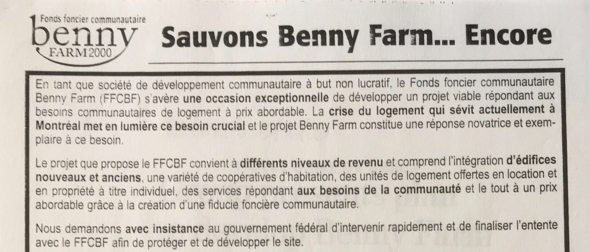
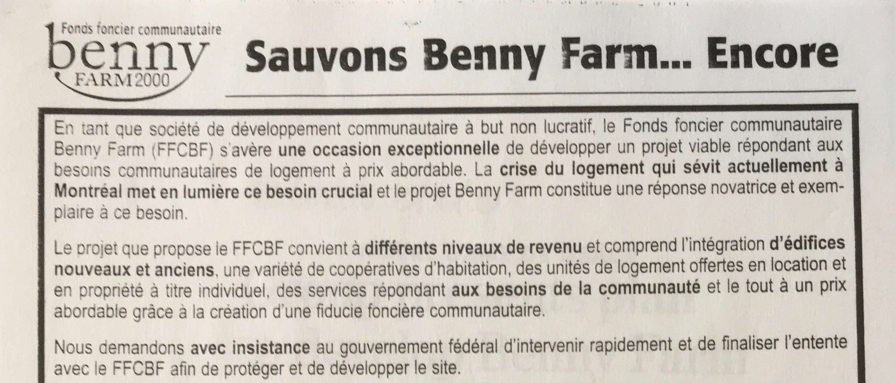

In 1838, he purchased a parcel of land that stretched from the St-Jacques escarpment to Cote-Saint-Luc Road. The Bennys built a manor house near Upper Lachine Road, while the farmhouse was near Cavendish boulevard.
1833 - Farmland
British immigrant Walter Benny began his career in Montreal as a Master-Baker and soon became involved in milling, banking, hardware and other concerns. As member of the city’s wealthy merchant-class, he owned many properties, including a building on St-Joseph Street in Old Montreal that still bears his name.


1944 - Federal Land
Intending to build a veterans’ hospital, the MPNH (Minister of Pensions and National Health) buys the remaining undeveloped farmland from the Benny family.

Responding to growing anger over a housing crisis for returning veterans, the government opts to build housing instead.
1946 ~ 1947 - Who will build housing for veterans?
Federal Government asks private enterprise to get involved in solving veterans’ housing crisis and sells land Housing Enterprises of Canada Limited, a consortium of insurance companies, who builds Benny Farm complex a model for post-war housing.

" Garden City... buildings that would encourage community."
Designed by architect Harold James Doran in garden city style with much common green space. Modernist and functional six-plexes are in contrast to surrounding neighbourhood housing stock in the surrounding neighbourhood.

1947 - The New Landlord: Central Mortgage and Housing Corporation
In 1946, The Farm is purchased by the newly created Central Mortgage and Housing Corporation (CMHC). Veterans’ families are awarded apartments based on a military service point system.


 
